AI
6 topics

Anthropicのダリオ・アモデイCEOが「AIの規制」について物申す、規制が中央集権化につながるという指摘に反論
Anthropicのダリオ・アモデイCEOが「AIの規制」について物申す、規制が中央集権化につながるという指摘に反…
注目ポイント注目度 67点
公務わずか38日のメラニア米大統領夫人、AI悪用規制法と1720万ドル超の私的ビジネスで際立つ存在感
注目ポイント注目度 67点
CodeAI との提携で、初の AI 世代に備える
注目ポイントOpenAI｜注目度 65点
ChatGPT 広告、欧州全域へ拡大
注目ポイントOpenAI｜注目度 65点
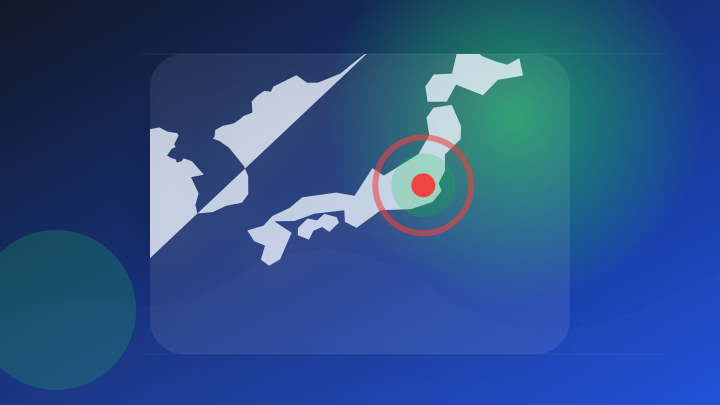
生成AIの学習データ、事業者に開示要求 政府が知財保護で原則案
注目ポイント注目度 64点
Sansan、「Contract One」にClaudeを用いたAIエージェントを追加
注目ポイント注目度 61点
IT業界
2 topics
政治
6 topics
死者２８９人、負傷者４１００人超 災害対応に「政治利用」批判も―コロンビア地震１週間
注目ポイント注目度 100点
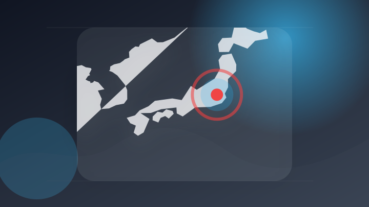
UNDP、日本政府の支援のもとトルクメニスタンで地域災害リスク軽減プロジェクトを開始
United Nations…
注目ポイント注目度 67点
AIの学習データ、開示せずとも罰則なし 政府が事業者向けルール案 [AIの時代]
注目ポイント注目度 64点
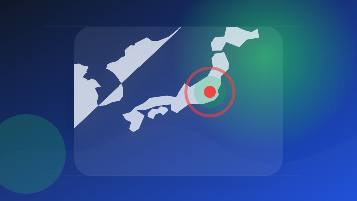
ロシア、日本大使に抗議 北方領土巡る高市首相発言に反発
注目ポイント注目度 64点
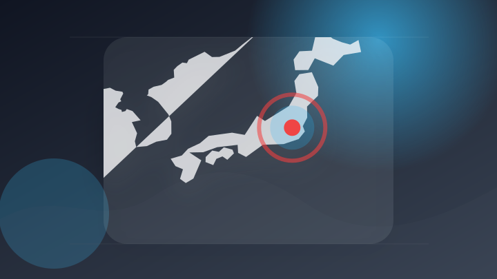
［社説］首相の「責任ある外交」に戦略が見えない
注目ポイント注目度 64点
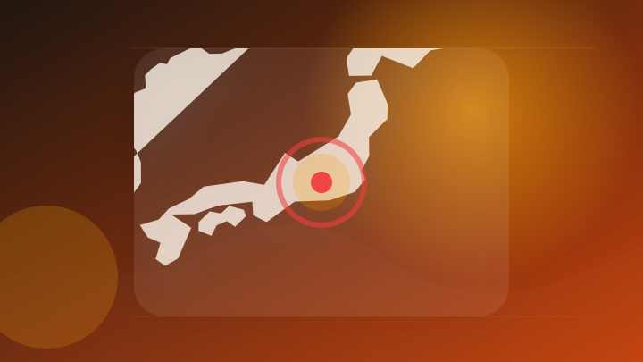
甲府市長選は選挙戦へ 39歳女性が立候補へ最終調整 現職・樋口氏も立候補の意向 山梨
注目ポイント注目度 64点
社会
6 topics
鹿児島の返礼品牛肉偽装事件、逮捕の元役員は否認 自治体は影響懸念 [鹿児島県]
注目ポイント注目度 70点
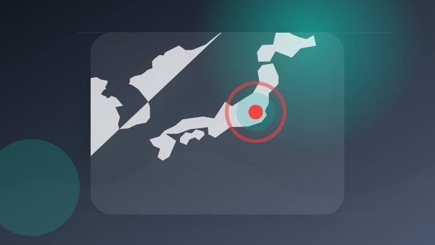
生徒の外国人が「止まれ」理解できず事故で死亡か、日本語学校長が啓発強化…地元警察も協力・英語併記切り替え進む
注目ポイント注目度 70点
「けんかして、出血あり」 尾道で殺人未遂事件、容疑の男逮捕（中国新聞デジタル）
注目ポイント注目度 67点
フィリピンのカトリック校で生徒が銃乱射 生徒1人が撃たれ死亡、容疑者も自殺
注目ポイント注目度 67点
殺人未遂罪で起訴の77歳被告 病院から不明に 勾留執行の停止中 [北海道]
注目ポイント注目度 64点
夏休み中の子どもたちが模擬裁判を体験
注目ポイント注目度 61点
事件・事故
6 topics
水迫畜産・元取締役逮捕で今後の捜査は
注目ポイント独立2媒体｜注目度 95点
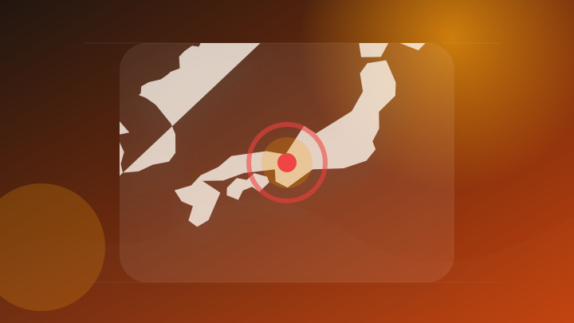
SNSで知り合った10代女児に性的暴行か カレー店経営者を逮捕 [東京都]
注目ポイント注目度 70点
「パニックになり逃げた」防犯カメラのリレー捜査で23歳の男を逮捕 バイク重傷ひき逃げ事件 大阪・生野区
注目ポイント注目度 70点
盛岡市で交通事故 高齢の女性が死亡【岩手】
注目ポイント注目度 67点
帯広の住宅火災 死亡女性は住人
注目ポイント注目度 67点
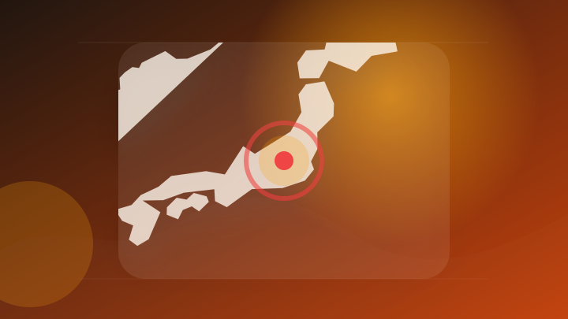
ひき逃げで重体だった74歳男性が死亡 群馬・太田市
注目ポイント注目度 67点
災害
6 topics
令和８年熊本地震非常災害対策本部会議・令和８年８月千葉豪雨に関する関係閣僚会議
注目ポイント注目度 100点
震度7にも耐えるとされていたが… 震度6強の熊本地震で市役所の免震装置が損傷 東海地方の建物は？ | TBS NEWS DIG
震度7にも耐えるとされていたが… 震度6強の熊本地震で市役所の免震装置が損傷 東海地方の建物は？
注目ポイント注目度 100点
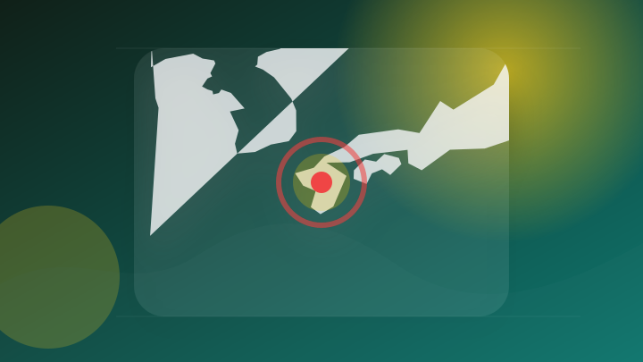
熊本地震 局所的に今の耐震基準でも倒壊するほどの揺れか
注目ポイント注目度 70点
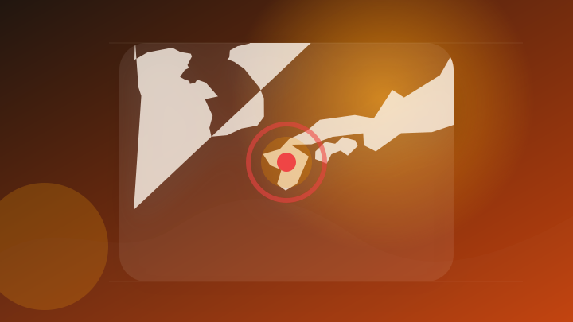
熊本地震の「局地激甚災害」に新たに３市町指定へ、高市首相が熊本県知事に伝える…中小企業の資金繰り支援
注目ポイント注目度 70点
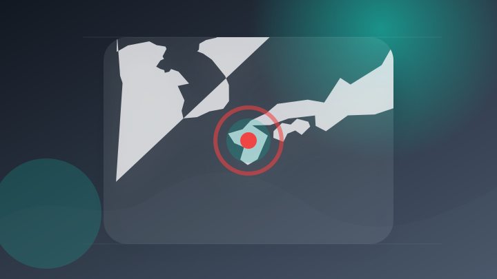
熊本地震 災害関連死の疑い含め39人死亡 避難所に2966人避難
注目ポイント注目度 70点
地震倒壊 工場煙突を国が全国調査
注目ポイント注目度 67点
経済
2 topics
エンタメ
2 topics
ライフ
2 topics
人気島暮らしシム『スターサンド・アイランド』正式リリース、Switch 2/PS5版も配信開始。待望の「最大4人マルチ」対応、もっと賑やか田舎島スローライフ
人気島暮らしシム『スターサンド・アイランド』正式リリース、Switch 2/PS5版も配信開始。待望の「最大4人マ…
注目ポイント注目度 61点
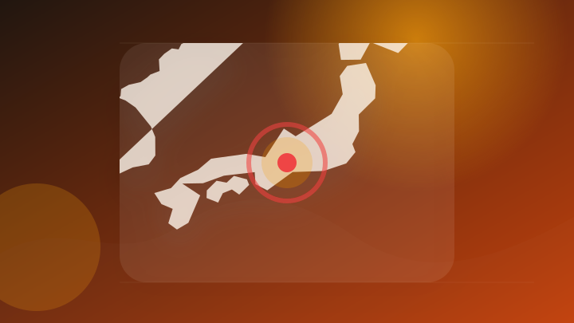
【倒産】太陽光発電システム販売・設置「エスイーライフ」 関連会社「SKCエナジー」とあわせ負債約3億6000万円 名古屋市中川区
【倒産】太陽光発電システム販売・設置「エスイーライフ」 関連会社「SKCエナジー」とあわせ負債約3億6000万円…
注目ポイント注目度 61点